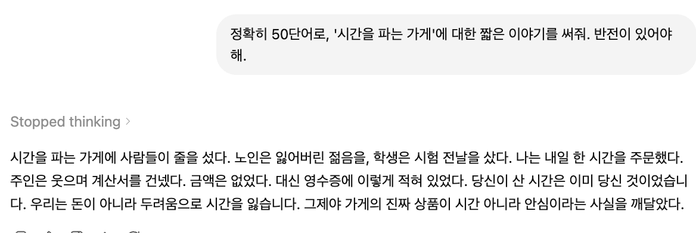
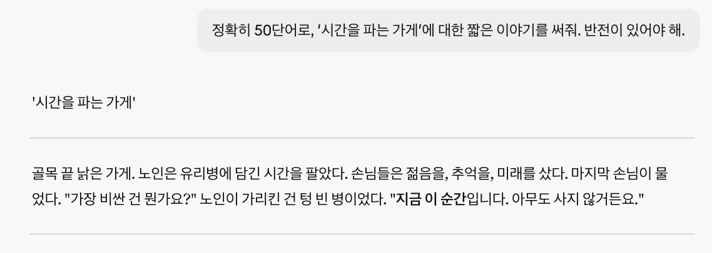
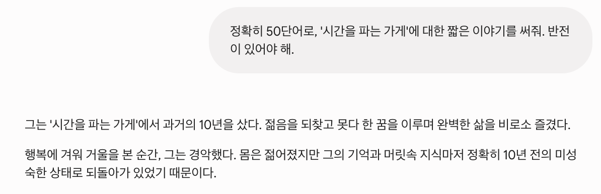

세 AI 챗봇에게 똑같은 50단어 창작 프롬프트를 주고 직접 단어 수를 세어봤어요. 제약 준수와 스토리텔링의 차이가 생각보다 컸어요.
대부분의 AI 비교 글은 직접 돌려볼 일 없는 벤치마크를 근거로 "어떤 챗봇이 최고"라고 말해요. 저는 다른 걸 해보고 싶었어요 — 제가 직접 할 수 있고, 여러분도 세어보면 검증할 수 있는 테스트요. 그래서 ChatGPT, Claude, Gemini에게 똑같은 창작 프롬프트를 주고 결과를 비교했어요.
프롬프트는 단순해 보이지만 세 가지를 동시에 테스트해요. 창의력, 엄격한 제약을 지키는 능력, 그리고 이야기를 구성하는 솜씨요. 세 챗봇 모두에게 정확히 이렇게 물었어요:
"정확히 50단어"라는 부분이 중요해요. 객관적인 제약이거든요 — 맞추거나 못 맞추거나 둘 중 하나고, 세어보면 알 수 있어요. "반전" 요구는 모델이 단순히 묘사를 넘어, 결말이 있는 무언가를 구성할 수 있는지 테스트해요. (참고로 영어는 단어 수를 정확히 셀 수 있지만, 한국어는 '단어'의 기준이 모호해서 영어판 단어 수를 기준으로 평가했어요.) 각 챗봇이 내놓은 결과예요.
영어판 단어 수: 50 — 정확. ChatGPT는 셋 중 유일하게 목표를 정확히 맞췄어요. 반전은 철학적이에요 — 산 시간이 원래 내 것이었고, 진짜 상품은 '안심'이었다는 거죠. 영리한 마무리지만, 마지막에 교훈을 직접 설명하는 쪽으로 약간 기울어요.

영어판 단어 수: 49 — 한 단어 부족. Claude는 단어 수를 하나 놓쳤지만, 제가 보기엔 셋 중 가장 강력한 반전을 만들었어요. 가장 비싼 시간이 '지금 이 순간'이고, 아무도 그걸 사지 않는다는 거죠. 설명 없이도 와닿고, 여운이 길어요.

영어판 단어 수: 48 — 두 단어 부족. Gemini는 목표에서 가장 멀었고, 영어판에는 철자 오류("Exstatic" → 올바른 표기는 "Ecstatic")도 있었어요. 젊어지지만 기억과 성장까지 되돌아간다는 반전 아이디어는 괜찮지만, 다른 둘보다 익숙한 개념이고 표현이 조금 밋밋하게 읽혀요.

프롬프트가 실제로 테스트한 항목별로 세 챗봇을 비교하면 이래요:
| 평가 항목 | ChatGPT | Claude | Gemini |
|---|---|---|---|
| 단어 수 정확도 | 50 ✅ | 49 | 48 (오타) |
| 반전의 완성도 | ★★★★ | ★★★★★ | ★★★ |
| 문장력 | ★★★★ | ★★★★★ | ★★★★ |
프롬프트 하나니까 이건 스냅샷이지, 어떤 모델이 무조건 낫다는 결론은 아니에요. 하지만 패턴은 더 긴 테스트에서 나타나는 경향과 일치해요. ChatGPT는 정확한 지시를 따르는 데 가장 신뢰할 만했어요 — "정확히 50단어"라고 하면 그걸 엄격한 규칙으로 취급해요. 제약을 정확히 지켜야 하는 작업이라면 이 신뢰성이 중요해요.
Claude는 가장 감정적으로 와닿는 글을 썼어요. 반전이 단순히 놀라게 하는 게 아니라, 한 문장으로 이야기 전체를 다시 보게 만들었어요 — 좋은 단편이 하는 일이죠. 글의 질과 아이디어의 임팩트가 정확한 단어 수보다 중요한 창작이라면, 이 테스트에선 Claude가 앞섰어요.
Gemini도 나쁘지 않았어요 — 이야기는 일관됐고 개념도 합리적이었어요. 하지만 제약을 가장 많이 놓쳤고, 오타가 있었고, 아이디어가 더 익숙했어요. 3파전 창작 테스트에선 3위였어요.
정확한 지시 준수가 필요하다면, 이 테스트에선 ChatGPT가 가장 신뢰할 만했어요 — 다른 둘이 못 맞춘 50단어를 정확히 맞췄거든요. 글 자체의 질과 임팩트가 가장 중요하다면 Claude가 최고의 이야기를 썼어요. Gemini는 무난했지만 이 테스트에선 3위였어요. 솔직한 결론은 — "최고의 챗봇"은 제약 준수를 중시하느냐, 창작 솜씨를 중시하느냐에 완전히 달려 있다는 거예요.